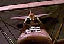

Jason McGuire's
Herr Fokker D-VII
|  | This 24" span model was built stock from a Herr Engineering kit. It is pretty heavy at 75 gm without rubber. Power is 2 loops of 3/16" Tan II, driving a 9" silver prop. Flight times are around 45 seconds.
The color scheme represents a little known genuine D.VII that hung in Grauman's Chinese Theater during the 1930 premiere of "Hell's Angels" and was flown by noted stunt pilot Frank Clarke during filming. |
 |
Click either image for larger views.
Copyright 1998, Thayer Syme. All rights reserved